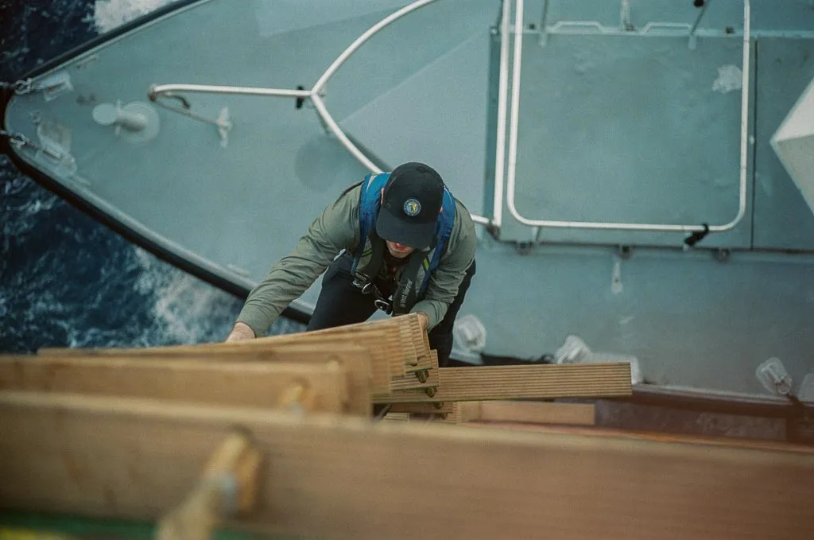
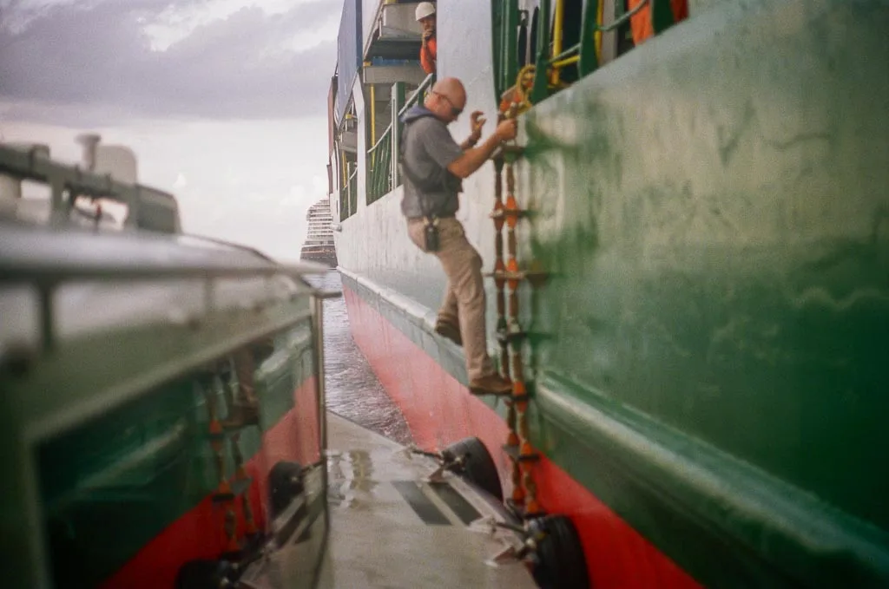

Product line 03
Pilot Transfer Safety
Hardware in development
The most dangerous few seconds of a pilot's day.
Boarding a moving ship from a pilot boat by rope ladder has not changed in a century. The boat rises and falls against the hull, the ladder is rigged by eye, and the pilot's timing is the only safety system in play.
NAVARC's transfer-safety products are hardware: sensor-based systems that measure the motion, loads and sea conditions at the boat-to-ladder interface.

Technologies in development
Three sensor-based systems for the transfer interface.
Each entry states the problem it addresses and what the hardware senses. Design detail is shared under NDA.
-
01 Motion-Compensated Boarding Platform
- Problem
- The pilot boat heaves and rolls against the hull while the ladder stays fixed to the ship. The pilot has to time the step between the two.
- What it senses
- The boat's own motion and its motion relative to the ship's side, measured continuously at the boarding position.
- What it does
- A platform on the pilot boat that moves to reduce the relative motion between the pilot's feet and the bottom rung during the step across.

The foredeck of a pilot boat in a swell: the motion the platform is designed to take out of the transfer. -
02 Smart Pilot Ladder
- Problem
- The ladder's height above the water and the sea running beneath it are judged by eye from the ship and from the boat, in the dark and in a seaway.
- What it senses
- Height above the water, together with wave, sea and swell data at the ladder.

The ladder as it is today: rope, wood and the crew's judgement. -
03 Further transfer-safety systems
- Scope
- Additional sensor-based systems for the transfer interface, including the measurement of sea state and relative motion at the ladder and guidance to the pilot during the climb.
- Disclosure
- Discussed with partners and pilot groups under NDA.
How hardware gets to the boat
Measured first, then built, then proven on the water.
NAVARC follows the readiness path used by federal research programs: a technology is not called ready until it has worked in the environment it is meant for.
- Concept and patentThe problem is defined from pilotage experience and the approach is protected before it is disclosed.
- MeasurementSensors go on real pilot boats and ladders first, so the design is built on recorded motion and loads rather than assumptions.
- PrototypeBench and dockside prototypes prove the key function and retire the main technical risks.
- Trials with pilotsWorking pilot groups test the system in service, in the sea states it is meant for.
- ProductionBuilt with shipyard and manufacturing partners for pilot boats and ships.